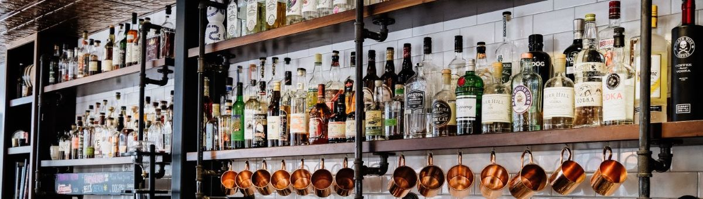

Query and Dashboard - Iowa's Liquor Retail - Analytics 3
Tools used in this project
- Query and Join - SQL
- Visualization - Tableau
Overview
This project enables stakeholders such as liquor producers, retailers, and even policymakers to better understand the transactions of alcoholic beverages. Hence, they can best respond to market changes.
For example, if a retailer observes a growth in a county’s sales in certain types of liquor, it might indicate an investment opportunity. Similarly, a sudden spike in alcohol transaction (in terms of price or volume) can be symptomatic of an alarming consumption trend, which prompts further investigation of policymakers.
Initially, I queried two tables of interest and joined them using SQL. Then I loaded the data into Tableau and built the dashboard. Using the dashboard, we can then investigate, for example, the category, price, sales volume, time, location, and retail branch of liquor transactions.
Interactive Dashboard for Iowa's Liquor Retail
The following dashboard has been initialized for the entire Iowa state from 2017 to 2020. If you hover your cursor over the plot elements, you can see more details. To filter on specific parameters such as quarter, year, liquor category, retail store, county, or even a combination of them, simply click on the plot elements of interest.

More details
To see the full SQL query, click the link below.
The Iowa Liquor dataset used in this analysis was found at the State of Iowa. It is work given to the public domain under the CC0 1.0 Universal (CC0 1.0) Public Domain Dedication.